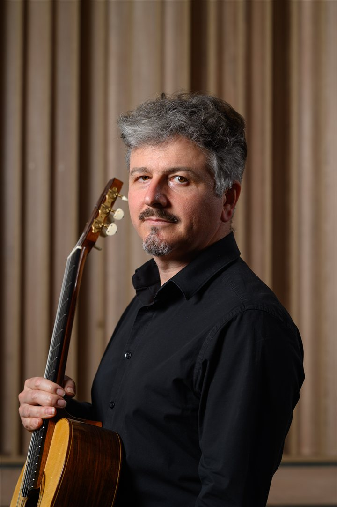

Costin Soare
Chitarist

Costin Soare este unul dintre cei mai apreciați și activi muzicieni români, îmbinând în mod fericit o frumoasă carieră concertistică — chitarist și lutist — cu cea pedagogică, ca profesor la C.N.A. „Dinu Lipatti” din București și cadru asociat dr. la Universitatea Națională de Muzică din București în perioada 2002–2023. Este, de asemenea, manager cultural și director artistic al Festivalului Internațional „Serile de chitară”, proiect de succes în cadrul căruia concertează chitariști de top din întreaga lume.
Cu o experiență de 15 turnee naționale și internaționale la activ — peste 90 de concerte în țară și străinătate (Ungaria, Danemarca, China) — în ipostază solistică sau alături de muzicieni precum flautistul Ion Bogdan Ștefănescu, violoniștii Valentin Șerban și Vlad Maistorovici, violistul Marius Ungureanu, mezzosoprana Claudia Codreanu, actrița Daniela Nane și chitaristul Ioan Bănescu (Duo HESPERUS), Costin Soare este un promotor neobosit al muzicii clasice prin intermediul unui instrument a cărui voce intimă și repertoriu sunt apreciate de publicul larg.
Discografia sa cuprinde trei CD-uri solo — „Nocturne și dansuri” (2014), „Oglinzi” (2020) și „Orașe invizibile și ființe imaginare” — Muzică contemporană românească pentru chitară (2021) — precum și un album cameral, „Twenty Shades of Music” (2017), realizat alături de Ion Bogdan Ștefănescu. Suma celor peste 250 de concerte desfășurate în țară și străinătate confirmă vocația sa de promotor al muzicii clasice.
Pasionat de muzica contemporană, a inițiat un proiect unic în lumea chitaristică de la noi, intitulat „Musica...”, parte a Festivalului Internațional „Serile de chitară”, prin care încearcă să stimuleze creația pentru instrument, ocolit până de curând de majoritatea compozitorilor valoroși din România. De la debutul proiectului, în 2012, la Muzeul Național „George Enescu”, a cântat în cele 9 recitaluri peste 25 de lucrări în primă audiție, scrise de compozitori precum Dan Dediu, Carmen Cârneci, Violeta Dinescu, Gabriel Almași, Gabriel Mălăncioiu, Șerban Marcu, Cătălin Ștefănescu-Pătrașcu, Sebastian Androne și Sebastian Țună, printre alții.
În perioada 2022–2025 cântă, după mai bine de 30 de ani de la premieră, alături de orchestrele din Iași, Sibiu, Bacău, Ploiești și Chișinău, Concertul pentru chitară și orchestră de Dumitru Capoianu — primul concert scris la noi dedicat chitarei clasice.
În 2023 inițiază proiectul intitulat MELANCOLIA, alături de mezzosoprana Claudia Codreanu și lutistul Constantin Lazăr, care a cuprins o serie de 9 concerte cu caracter interdisciplinar — muzică, pictură, fotografie, poezie — desfășurate în 7 orașe ale țării: București, Sinaia, Mediaș, Sibiu, Iași, Bârlad și Ploiești. Concertele au avut loc în spații de patrimoniu, potrivite ideii organizatorilor de a reconstitui atmosfera specifică Schubertiadelor, și au propus un program inedit pentru spațiul muzical românesc, cu cântece pentru voce și lăută de John Dowland și lieduri de Franz Schubert aranjate pentru voce și chitară.
În 2024, alături de actorul Ionel Barac și de artistul vizual Alex Icodin, desfășoară proiectul PLATERO ȘI CU MINE — DESPRE PRIETENIE, sub forma unui turneu național — 14 spectacole-concert, la care s-au adăugat ulterior alte 3 — în zone cu acces redus la cultură și în câteva orașe mari. Acesta aduce în atenția publicului de toate vârstele o lucrare inedită pentru narator și chitară, compusă de Mario Castelnuovo-Tedesco pe versuri de Juan Ramón Jiménez, o premieră în lumea muzicală de la noi, însoțită de ilustrații vizuale proiectate live. La concerte au participat peste 1200 de copii și peste 150 de adulți.
În 2025, alături de chitaristul Ioan Bănescu (Duo Hesperus), întreprinde Turneul Internațional DIVINA COMMEDIA 2.0 — INFERNO, o reinterpretare a viziunii lui Dante în cadrul unui spectacol multimedia ce a cuprins nouă lucrări muzicale și vizuale pentru duo de chitare și bandă — o premieră absolută în peisajul muzical românesc. Cele 7 concerte desfășurate în România, Italia, Austria și Germania au reunit nume importante ale componisticii românești contemporane, alături de artiști vizuali diverși din toate generațiile.
La finalul turneului, criticul muzical Loredana Baltazar nota: „Costin Soare și Ioan Bănescu formează un duo care se bucură deja de atuurile interpretative ale unui ansamblu cameral experimentat, iar în seara de 6 noiembrie și-au redemonstrat nivelul performant, nu doar prin calitatea tehnicii și omogenitatea replicilor instrumentale, ci și prin pregnanta implicare expresivă în parcursul fiecărui moment din acest context spectacular unicat.”
Este absolvent al cursurilor de master ale Royal Scottish Academy of Music and Drama — Glasgow, UK, cu o bursă completă de studii oferită de Associated Board of Royal Schools of Music. În perioada 2006–2008 studiază în cadrul „programului pentru profesori” la Universitatea de Educație (Departamentul de Muzică) din Sapporo, Hokkaido, Japonia — cursuri de dirijat orchestră, analiză-forme muzicale și orchestrație — ca bursier al guvernului japonez.
În 2011 obține titlul de Doctor în Muzică cu mențiunea „Magna cum laude” pentru teza de doctorat intitulată „Sonata pentru chitară în perioada 1920–1950 — Generația neoromantică”. În perioada martie 2012 – februarie 2013 este cercetător bursier post-doctoral „MIDAS” al Universității Naționale de Muzică din București, lucrând la o nouă ediție a celor „4 suite pentru lăută” — transcripție pentru chitară — de Johann Sebastian Bach.
În 2013 și 2014 este invitat ca profesor la cursurile de vară ale Academiei Sighișoara, alături de muzicieni de marcă din țară și străinătate, iar din 2016 până în prezent susține masterclass-uri și concerte în fiecare vară în cadrul prestigioasei Academii ICon Arts Transilvania.